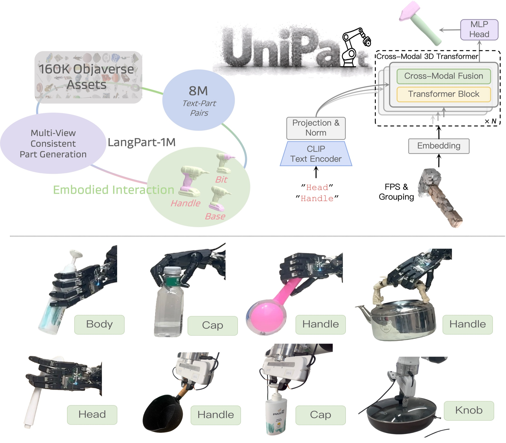
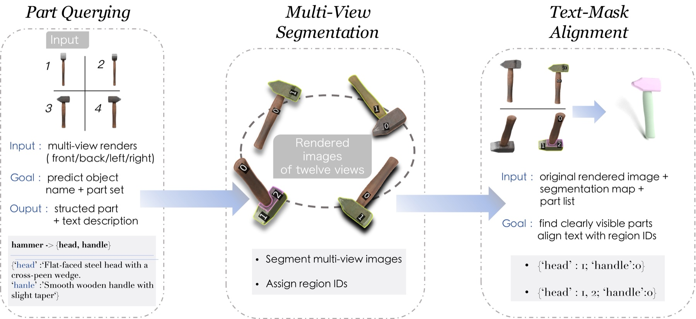
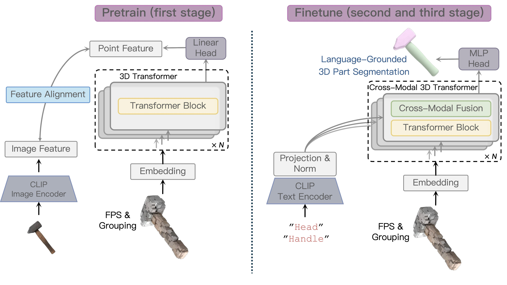
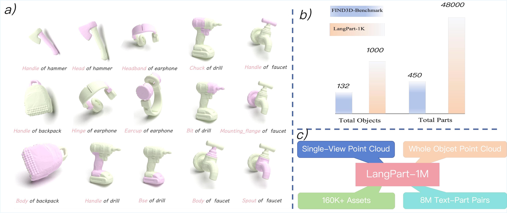
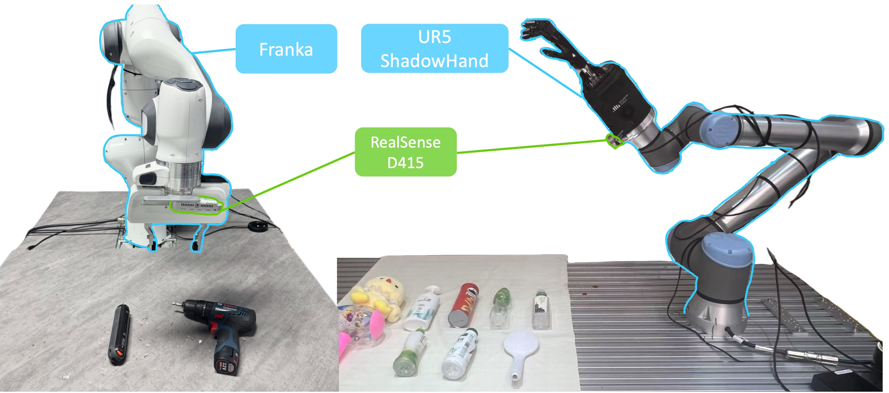

UniPart
Towards Zero-shot Language-Grounded 3D Part Segmentation for Embodied Interaction
* equal contribution † corresponding authors
1 NLPR, Institute of Automation, Chinese Academy of Sciences
2 Peking University
3 Tsinghua University
4 Galbot
5 Shanghai Jiao Tong University
6 Beijing Academy of Artificial Intelligence

UniPart maps a free-form phrase to a functional 3D part mask. We scale supervision with LangPart-1M (160K+ Objaverse assets, 8M text–part pairs) and use the predicted masks for language-conditioned grasping.
Abstract
Highlights
LangPart-1M and LangPart-1K
A large-scale dataset with 160K objects and 8M text-to-part pairs, plus a 1K-object open-vocabulary benchmark with more than 4K annotations.
Scalable data engine
Multi-view rendering, SAM proposals, Set-of-Mark prompting, and text-guided merging lift 2D parts into consistent 3D masks. LangPart-4K is verified by ten annotators.
A simple cross-modal Transformer
UniPart injects a frozen CLIP text embedding into every layer by addition, keeping the model lightweight while remaining strongly language-conditioned.
Embodied validation
On real sensor point clouds, UniPart produces part masks that can be passed to GraspNet and DexGraspNet 2.0 for language-conditioned grasping.
Method
Existing 3D models often fall into two patterns that leave a gap for dexterous manipulation: promptable but coarse instance separation, or part-aware but closed-set taxonomies. UniPart treats language-grounded part segmentation as the missing interface: take a natural language instruction and return the corresponding 3D part mask.


Dataset and Qualitative Results

Results
Zero-shot mIoU on Objaverse-General, following the FIND3D protocol with two prompt formats.
| Method | Seen categories | Unseen categories | ||
|---|---|---|---|---|
| {part} of a {object} | {part} | {part} of a {object} | {part} | |
| PointCLIPV2 | 9.81 | 11.27 | 10.27 | 11.09 |
| PartSLIP++ | 2.69 | 15.03 | 0.57 | 10.43 |
| OpenMask3D | 11.81 | 11.93 | 7.01 | 10.31 |
| FIND3D | 33.78 | 34.10 | 26.21 | 27.41 |
| UniPart (ours) | 46.43 | 49.27 | 41.46 | 45.23 |
UniPart is also best on ShapeNetPart, PartNet-E, and our LangPart-1K split. A controlled study shows both the dataset and the architecture contribute: FIND3D on LangPart-1M reaches 38.42 mIoU, while UniPart on LangPart-1M reaches 47.25.
Real-World Part Grasping
We run language-conditioned grasping on a Franka Panda with a gripper and a UR arm with a Shadow Hand. A single RealSense D415 provides the observation. UniPart predicts the target part, which is then passed to GraspNet or DexGraspNet 2.0.

BibTeX
@inproceedings{yu2026unipart,
title = {UniPart: Towards Zero-shot Language-Grounded 3D Part Segmentation
for Embodied Interaction},
author = {Xinqiang Yu and Zekun Qi and Jiawei He and Wenyao Zhang and
Xuchuan Chen and Guocai Yao and Li Yi and Zhaoxiang Zhang and He Wang},
booktitle = {European Conference on Computer Vision (ECCV)},
year = {2026}
}